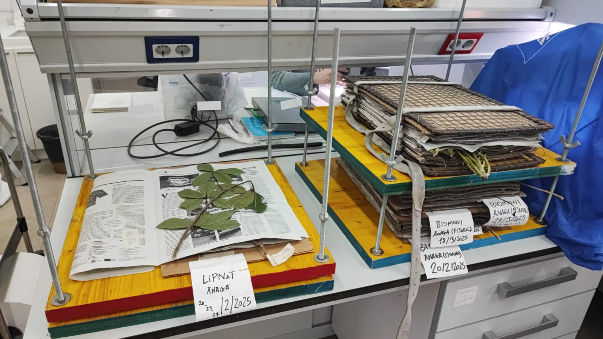

BioMonI is a project within the Biodiversa+ initiative (European Biodiversity Partnership) whose primary objective is to establish an international, interdisciplinary long-term biodiversity monitoring network for oceanic islands. The project aims to develop standardized methodologies and protocols to evaluate the status and temporal trends of biodiversity and ecosystem functioning in oceanic island systems. By harmonizing monitoring approaches, BioMonI seeks to support more effective conservation and management actions while preventing the loss or fragmentation of ecological knowledge.
Within this framework, the IPNA-CSIC-led component, BioMonI-Genes, focuses on improving understanding of the floristic and invertebrate diversity of oceanic islands through DNA-based monitoring techniques. This includes advancing knowledge of phylogenetic diversity, community structure, and species composition across multiple organismal groups. The project integrates field sampling, taxonomic validation, and molecular analyses to build a scalable monitoring strategy applicable to other island regions.
A further objective is to generate reference genetic resources and methodological workflows that enable long-term biodiversity assessment, particularly for understudied taxa such as bryophytes, green microalgae, and flying arthropods. Through international collaboration—such as DNA sequencing conducted with Texas Tech University—the project also aims to expand genomic tools for cryptogamic plant groups, where commercial probe sets are currently unavailable.
Collectively, these objectives position BioMonI as a foundation for evidence-based conservation, biodiversity forecasting, and climate-change impact assessment in oceanic island ecosystems.
WP4 Activies: Project activities of BiomonI-Genes are organized into fieldwork, taxonomic laboratory work, and genetic laboratory analyses.
Fieldwork was conducted in four locations (Moquinal, Aguas Negras, Ijuana, and Pijaral) within the Anaga Rural Park (Tenerife, Canary Islands). At each site, a 50 × 50 m permanent plot was established, physically and biologically characterized, and subdivided into three 2-m-wide transects for systematic sampling. Surveys targeted vascular plants (angiosperms and ferns), bryophytes, and green microalgae, alongside specialized sampling of epiphyllous bryophyte communities, which are highly sensitive to climate change. In parallel, SLAM passive traps were deployed to collect flying arthropods, with samples retrieved every 2–3 weeks. Field activities occurred between October 2024 and July 2025, including permitting, plot establishment, biological sampling, tree structural measurements, and trap maintenance.
Taxonomic laboratory work involved species identification and cleaning of bryophyte samples, preparation of herbarium vouchers for vascular plants, and culture enrichment of green microalgae to enable downstream molecular analysis. These activities have been ongoing since January 2025, and we are planing to finish them by May 2026.
Genetic laboratory work focused on DNA extraction from 96 biological samples spanning angiosperms, ferns, bryophytes, and microalgae. Extracted material was sent to an international collaborator for HybSeq sequencing, supporting development of genomic resources for cryptogams. Concurrently, sorting of flying arthropod material began in May 2025 to enable subsequent DNA extraction and analysis, with completion expected by the end of June 2026.
Together, these coordinated activities establish the empirical, taxonomic, and molecular foundation required for long-term DNA-based biodiversity monitoring on oceanic islands.


SLAM trap for flying arthropods in one of the plots in Anagas Rural Park (left, Credits: Paloma Martínez) and vascular plants sampling in one of the plots in Anagas Rural Park (right, Credits: Nereida Rancel).


Bryophytes sampling in one of the plots in Anagas Rural Park (left, Credits: Nereida Rancel) and Vascular plants sampling in one of the plots in Anagas Rural Park (right, Credits: Paloma Martínez).

Vascular plants vouchers in the press (Credits: Javier Tuero)